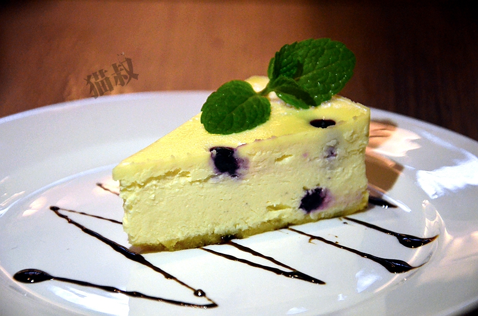

蔻米葡国餐吧位于厦门五缘湾建发中央湾区湾悦城2楼，就在那只长颈鹿的头边上，主营葡萄牙风味美食，夜晚则变身酒吧，晚上营业时间到凌晨1点，不受商场打烊时间的限制，可以尝美食品美酒，度过一个异国风情的夜晚。
玩过《大航海》这个游戏的人一定不会对葡萄牙陌生，15-16世纪是欧洲大航海时代，也是地理大发现时代，欧洲结束了长达1000年的中世纪黑暗时期，迎来了文艺复兴，航海家们怀揣着梦想，鼓起勇气投入那未知的茫茫大海，探索着未知的世界，促进了世界科学技术、经济文化的发展，当然其中也有黑暗和血腥，但无论如何那都是一个波澜壮阔令人热血沸腾的时代，葡萄牙这个欧洲沿海小国也趁势而起，通过贸易、掠夺等手段一跃成为了海上霸主之一，成了一个欧洲列强。中国在明朝航海也是很强大的，郑和舰队无论从技术、规模各方面都远超当时的欧洲各国，可惜后来的海禁政策断绝了中国人的航海梦，从此中国的发展停滞不前，而欧洲则飞速发展，强大的中华帝国渐渐被赶超，泱泱天朝沦为列强鱼肉的对象，实在令人扼腕，这种结果是偶然也是必然，封建专制的社会制度落后于资本主义制度，皇帝的独断专行必然导致愚蠢的政策。几百年过去了，大航海时代已经远去，但海洋文化的烙印仍深深留在葡萄牙的血液里，当年《大航海》这个只有几M的小游戏我玩了可能有上百遍，也对游戏中的主角国家之一葡萄牙充满了好奇，目前还没有机会去葡萄牙玩，那就先去蔻米葡国餐吧品尝葡萄牙美食过把瘾吧！
餐厅环境不错，精致优雅，充满异国风情。
先喝杯饮料，清新爽口。
椒盐薯角，感觉应该是用土豆泥炸的，外酥里嫩，香甜可口。
葡式芫西马介休忌廉，外观类似西餐里的浓汤，喝起来更加浓郁，浓香美味，汤里还有不少条状的腌制的鳕鱼，令汤的味道更加鲜美独特。
蔻米凯撒沙律、辣汁金枪鱼沙律，凯撒沙律食材丰富咸香够味，金枪鱼沙律真材实料鲜香可口，蔬菜新鲜水灵，令人胃口大开。
芝士肉酱焗意粉，芝士丰富，肉酱够味，两碗都被一扫而空，可能是我吃过的最好吃的意面。
葡式烧羊架，羊肉大块厚实，肉质细嫩又有嚼劲，香喷喷的没有羊膻味，一根在手，无比满足。
招牌葡式蛋挞，色泽金黄诱人，吃起来香酥可口，还有搭配好吃的薯条哦。
招牌葡式海鲜饭，原来不光西班牙有海鲜饭，葡萄牙也有啊，感觉葡萄牙的海鲜饭比西班牙的稀一些，有不少螃蟹、青口、虾、鱿鱼等海鲜，还有配一碗酱，如果觉得味道不够重可以加酱拌匀后吃。
葡式红酒烩牛仔骨，肉肉很大块，口感扎实有弹性，特别是骨头边上的一圈肉很有嚼劲，烹制很入味，酱汁浓郁，口感味道都很棒。
葡式烤时蔬，蔬菜烤的香喷喷的很好吃，蔬菜应该是欧洲进口的，小小的包菜很可爱，一口一个，清脆爽口。
葡式炭烧原汁鸡，油光发亮色泽诱人，皮嫩肉香，烹制入味，一下就被瓜分一空。
甜品品尝了蓝莓慕斯、榴莲芝士蛋糕、柠檬酸奶起司、蓝莓芝士蛋糕、招牌葡式木糖布丁，造型精美，口感细腻，甜美可人。

今晚充满异国风情的美食之旅结束了，但对大航海时代的向往却更加炽热了......
 330445074@qq.com
330445074@qq.com 12345
12345